전자계산기기사 (2017-03-05 기출문제)
1과목: 시스템 프로그래밍
1. 컴퓨터가 직접 이해할 수 있는 2진수로만 이루어진 언어를 의미하는 것은?
- assembly language
- high level language
- assembler
- machine language
(정답률: 63%)

2. 작성된 표현식이 BNF의 정의에 의해 바르게 작성 되었는지를 확인하기 위해 만들어진 것은?
- Binary Search Tree
- Binary Tree
- Parse Tree
- Skewed Tree
(정답률: 50%)
3. IBM 메인프레임 O/S에 사용되는 스크립트 언어로, 일괄 처리 작업을 수행하거나 하부 시스템을 시작하는 방법을 시스템에 지시하는 역할을 하는 것은?
- Memory Address Register
- Task Scheduling Processor
- Mainframe Adventure
- Job Control Language
(정답률: 52%)
4. 어셈블러를 두 개의 패스로 구성하는 주된 이유는?
- 한 개의 패스만을 사용하면 프로그램의 크기가 증가하여 유지보수가 어렵다.
- 한 개의 패스만을 사용하면 메모리가 많이 소요된다.
- 기호를 정의하기 전에 사용할 수 있어 프로그램 작성이 용이하다.
- 패스 1, 2의 어셈블러 프로그램이 작아서 경제적이다.
(정답률: 64%)
5. 매크로의 처리 순서 중 괄호 안 내용으로 옳은 것은?
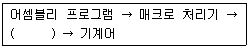
- 컴파일러
- 어셈블러
- 인터프리터
- 로더
(정답률: 50%)
6. 시스템 소프트웨어로 볼 수 없는 것은?
- Compiler
- Macro Processor
- Loader
- Spreadsheet
(정답률: 58%)
7. 다음과 같은 프로세스들이 차례로 준비상태 큐에 들어왔을 경우 SJF 스케줄링 기법을 이용하여 제출시간이 없는 경우의 평균 실행시간은?
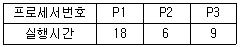
- 10
- 11
- 18
- 24
(정답률: 62%)
8. 어셈블리언어에 대한 설명으로 가장 옳지 않은 것은?
- 머신코드를 니모닉 심볼(mnemonic symbol)로 표현한 것이다.
- 프로세서(CPU)에 따라 같은 기능을 수행하더라도 명령어가 다르다.
- machine 명령문과 pseudo 명령문이 있다.
- high level 의 언어이다.
(정답률: 61%)
9. 매크로와 관련된 설명 중 가장 옳지 않은 것은?
- 매크로정의는 주프로그램에서 매크로의 이름을 기술하는 것이다.
- 매크로 호출은 정의된 매크로 이름을 주프로그램에 기술하는 것이다.
- 매크로 확장은 매크로 호출부분에 정의된 매크로 코드를 삽입하는 것이다.
- 매크로 라이브러리는 여러 프로그램에서 공통적으로 자주 사용되는 매크로들을 모아 놓은 라이브러리다.
(정답률: 40%)
10. 로더(loader)의 기능에 해당하지 않는 것은?
- compile
- allocation
- linking
- relocation
(정답률: 61%)
11. 멀티프로세서 시스템에 관한 설명으로 가장 관계가 없는 것은?
- 주기억장치에 여러 개의 프로그램이 기억된다.
- 중앙처리장치의 시간이 프로세서에게 나누어서 할당된다.
- 여러 개의 중앙처리장치가 동시에 수행된다.
- 여러 개의 프로세서가 동시에 수행된다.
(정답률: 48%)
12. 프로그래밍 언어에 대한 설명으로 틀린 것은?
- 기계어는 0과 1의 2진수 형태로 표현되며 수행시간이 빠르다.
- 어셈블리 언어는 기계어와 1:1로 대응되는 기호로 이루어진 언어이다.
- 기종에 상관없이 기계어가 동일하므로 호환성이 높다.
- 고급언어는 기계어로 번역하기 위해 컴파일러나 인터프리터를 사용한다.
(정답률: 55%)
13. 원시 프로그램을 컴파일러가 수행되고 있는 컴퓨터의 기계어로 번역하는 것이 아니라, 다른 기종에 맞는 기계어로 번역하는 것은?
- 디버거
- 인터프리터
- 프리프로세서
- 크로스 컴파일러
(정답률: 59%)
14. 일반적인 로더에 가장 가까운 것은?
- Direct Linking Loader
- Dynamic Loading Loader
- Absolute Loader
- Compile And Go Loader
(정답률: 51%)
15. 2패스 어셈블러에서 패스1과 가장 관련이 없는 것은?
- Symbol Table
- Literal Table
- Machine-Operation Table
- Base Table
(정답률: 36%)
16. 매크로 프로세서가 기본적으로 수행해야 할 작업의 종류가 아닌 것은?
- 매크로 정의 인식
- 매크로 정의 저장
- 매크로 호출 인식
- 매크로 호출 저장
(정답률: 53%)
17. 링킹에 대한 설명으로 가장 적합한 것은?
- 실제적으로 기계 명령어와 자료를 기억 장소에 배치한다.
- 고급 언어로 작성된 원시 프로그램을 기계어로 변환한다.
- 프로그램들에 기억 장소 내의 공간을 할당한다.
- 목적 모듈간의 기호적 호출을 실제적인 주소로 변환한다.
(정답률: 52%)
18. 주기억장치에 적재되어 있는 페이지들 중에서 어느 페이지를 교체할 것인가를 결정하는 교체 기법 중 가변 할당 기반의 교체 기법이 아닌 것은?
- LRU(Least Recently Used) 알고리즘
- VMIN(Variable MIN) 알고리즘
- WS(Working Set) 알고리즘
- PFF(Page Fault Frequency) 알고리즘
(정답률: 41%)
19. 페이지 교체 기법 중 가장 오래 동안 사용되지 않은 페이지를 교체할 페이지로 선택하는 기법은?
- FIFO
- LRU
- LFU
- SECOND CHANCE
(정답률: 57%)
20. 운영체제의 성능 평가 기준으로 거리가 먼 것은?
- 비용
- 처리 능력
- 사용 가능도
- 신뢰도
(정답률: 61%)
2과목: 전자계산기구조
21. 다음 마이크로 연산에 대한 설명으로 옳은 것은?
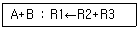
- A와 B의 값을 덧셈한 결과가 0이 아니면 R2와 R3의 값을 덧셈하여 그 결과를 R1에 전송한다.
- A 또는 B가 참이면 R2와 R3의 값을 덧셈하여 그 결과를 R1에 전송한다.
- A와 B의 값을 덧셈하여 플래그를 변경시키는 것과 동시에 R2와 R3의 값을 덧셈하여 그 결과를 R1에 전송한다.
- A 또는 B를 연산할 때 오류가 없으면 R2와 R3의 값을 덧셈하여 그 결과를 R1에 전송한다.
(정답률: 42%)
22. 캐시(cache) 액세스 시간이 11sec, 주기억장치 액세스 시간이 20sec, 캐시 적중률이 90%일 때 기억장치 평균 액세스 시간을 구하면?
- 1sec
- 3sec
- 9sec
- 13sec
(정답률: 39%)
23. 다음 회로의 출력 Y 값은?
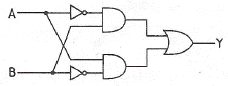
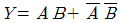
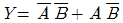
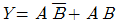
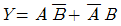
(정답률: 59%)
24. 1워드당 32비트인 컴퓨터 명령어 시스템에서 OPCODE가 8비트, 주소모드가 1비트인 경우에 이 컴퓨터가 가질 수 있는 레지스터의 최대 수는?(단, 기억장소의 크기는 1 메가바이트 이다.)
- 3
- 4
- 8
- 16
(정답률: 26%)
25. 다음 기억장치 중 CAM(Content Addressable Memory)이라고 하는 것은?
- 주기억 장치
- Cache 기억장치
- Virtual 기억장치
- Associative 기억장치
(정답률: 45%)
26. 다음 내용은 LOAD 기능을 수행하는 마이크로 오퍼레이션이다. 이 가운데 어떤 명령어든지 수행되기 위해서는 반드시 거쳐야 하는 단계끼리 나열한 것은?(단, Rs1, Rd, S2 : 레지스터 주소)
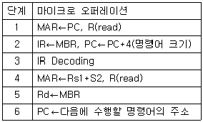
- 1, 2, 3, 6
- 2, 3, 4, 6
- 3, 4, 5, 6
- 1, 3, 5, 6
(정답률: 43%)
27. 1개의 Full adder를 구성하기 위해서는 최소 몇 개의 Half adder가 필요한가?
- 1개
- 2개
- 3개
- 4개
(정답률: 48%)
28. 기억장치의 용량을 나타내는 단위로 틀린 것은?
- 1GB(Giga Byte) = 230 Byte
- 1TB(Tera Byte) = 1024 PB(Peta Byte)
- 1MB(Mega Byte) = 1024 KB(Kilo Byte)
- 1MB(Mega Byte) = 220 Byte
(정답률: 46%)
29. 다음 기억장치와 관련된 설명 중 틀린 것은?
- associative memory는 데이터의 내용으로 병렬 탐색을 하기에 알맞도록 되어 있다.
- 메모리 기술의 발전으로 associative memory와 CAM이 DRAM보다 가격이 싸다.
- associative memory는 각 셀이 외부의 인자와 내용을 비교하기 위한 논리회로를 가지고 있다.
- CAM의 탐색은 전체 워드 또는 한 워드 내의 일부만을 가지고 시행될 수 있다.
(정답률: 43%)
30. 우선순위 중재 방식 중 중재동작이 끝날 때마다 모든 마스터들의 우선순위가 한 단계씩 낮아지고, 가장 우선순위가 낮았던 마스터가 최상위 우선순위를 가지는 방식을 무엇이라 하는가?
- 회전 우선순위
- 임의 우선순위
- 동등 우선순위
- 최소-최근 사용 우선순위
(정답률: 50%)
31. 레코드의 삽입(Insertion)이나 삭제(Deletion)가 빈번할 때 가장 적합한 데이터 구조는?
- Array 구조
- 계층 구조
- Binary Tree 구조
- Linked list 구조
(정답률: 48%)
32. 회로의 논리함수가 다수결 함수(Majority Function)를 포함하고 있는 것은?
- 전가산기
- 전감산기
- 3-to-8 디코더
- 우수 패리티 발생기
(정답률: 34%)
33. 10진수 (18-72)의 연산결과를 BCD 코드로 올바르게 나타낸 것은?(단, 보수는 9의 보수체계를 사용한다.)
- 0100 0101
- 1011 0110
- 1100 1001
- 1100 1010
(정답률: 44%)
34. 기억장치에 대한 설명 중 옳지 않은 것은?
- 기억장치는 주기억장치와 보조기억장치로 나눈다.
- 주기억장치는 롬과 램으로 구성할 수 있다.
- 접근방식은 직접 접근방식과 순차적 접근방식이 있다.
- 기억장치의 접근속도는 모두 일정하다.
(정답률: 57%)
35. 입ㆍ출력 제어 방식에서 다음의 방식은 무엇인가?
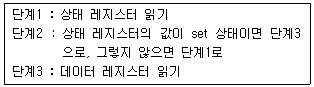
- 프로그램에 의한 I/O(programmed I/O)
- 인터럽트에 의한 I/O(interrupt I/O)
- DMA에 의한 I/O
- IOP(I/O 프로세서)
(정답률: 40%)
36. RISC(reduced instruction set computer)의 특징에 대한 설명 중 옳지 않은 것은?
- 주로 마이크로프로그램 제어방식 사용
- 명령어 숫자의 최소화
- 주소지정 방식의 최소화
- 각 명령어는 대부분 단일 사이클에 수행됨
(정답률: 32%)
37. 다음은 어떤 종류의 병렬 컴퓨터 구조를 나타낸 것인가?
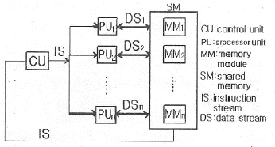
- SISD
- SIMD
- MISD
- MIMD
(정답률: 36%)
38. 논리식
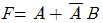
를 간소화한 식으로 옳은 것은?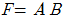
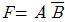
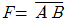
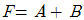
(정답률: 39%)
39. 캐시기억장치에 대한 설명으로 가장 옳은 것은?
- 중앙처리장치와 주기억장치의 정보교환을 위해 임시 보관하는 장치이다.
- 중앙처리장치의 속도와 주기억장치의 속도차이를 해소하기 위한 장치이다.
- 캐시와 주기억장치 사이에 정보 교환을 위하여 임시 저장하는 장치이다.
- 캐시와 주변장치의 속도를 같게 하기 위한 장치이다.
(정답률: 48%)
40. 기억장치에 대해 접근을 시작하고 종료한 후에, 다시 해당 기억장치를 접근할 때까지의 소요시간은?
- 탐색 시간(seek time)
- 전송 시간(transfer time)
- 접근 시간(access time)
- 사이클 시간(cycle time)
(정답률: 40%)
3과목: 마이크로전자계산기
41. 마이크로프로세서(micro processor) 어셈블리 프로그램의 ORG 명령이 사용될 수 없는 것은?
- 프로그램 카운터(program counter)
- 서브루틴(subroutine)
- 램 스토리지(RAM storage)
- 메모리 스택(memory stack)
(정답률: 21%)
42. 절대주소와 상대주소에 대한 설명으로 옳지 않은 것은?
- 절대주소는 고유주소라고도 부르며 기억장치에 고유하게 부여된 주소를 말한다.
- 절대주소를 이용하여 기억장치에 직접 접근할 수 있다.
- 상대주소는 기준주소를 필요로 하는 주소로 고유주소로 변경되어야 기억장치 접근이 가능하다.
- 상대주소는 기억장치 접근이 쉽지만 기억장치의 이용효율이 떨어지는 단점을 가지고 있다.
(정답률: 35%)
43. 다음 중 제어 프로그램에 속하는 것은?
- 수퍼바이저 프로그램
- 언어 처리 프로그램
- 유틸리티 프로그램
- 응용 프로그램
(정답률: 50%)
44. 주소 지정방식 중에서 기억장치를 가장 많이 액세스해야 하는 방식은?
- 직접주소 지정방식
- 간접주소 지정방식
- 상대주소 지정방식
- 인덱스주소 지정방식
(정답률: 35%)
45. 주루틴(main routine)의 호출명령에 의하여 명령 실행 제어만이 넘겨져서 고유의 루틴처리를 행하도록 하는 것은?
- 열린 서브루틴(open subroutine)
- 폐쇄 서브루틴(closed subroutine)
- 매크로(macro)
- 벡터(vector)
(정답률: 45%)
46. 입력된 아날로그 신호의 레벨을 미리 지정된 기준 레벨과 비교하고, 양자화 된 레벨을 식별하여 그 값을 디지털 신호로 출력하는 장치는?
- Decoder
- Encoder
- D/A Converter
- A/D Converter
(정답률: 45%)
47. 다음 중 가장 많은 양의 자료를 일정 시간에 입ㆍ출력할 수 있는 방식은?
- 프로그램에 의한 입ㆍ출력
- 인터럽트에 의한 입ㆍ출력
- DMA
- 직렬 입ㆍ출력
(정답률: 41%)
48. 다음 중 UART가 수행할 수 있는 동작이 아닌 것은?
- 키보드나 마우스로부터 들어오는 인터럽트를 처리한다.
- 외부 전송을 위해 패리티 비트를 추가한다.
- 데이터를 외부로 내보낼 때에는 시작비트와 정지비트를 추가한다.
- 바이트들을 외부에 전달하기 위해 하나의 병렬 비트 스트림으로 변환한다.
(정답률: 29%)
49. DMA 제어장치가 꼭 갖추어야 할 필수 레지스터가 아닌 것은?
- status register
- program counter
- data counter
- address register
(정답률: 38%)
50. 주어진 논리 기능을 수행하도록 프로그램 가능한 논리 게이트들을 가진 SPLD를 근간으로 하고 있으며, 전기적 소거 및 프로그램 가능 읽기 전용 기억장치(EEPROM) 등에 사용하는 것은?
- PAL
- CPLD
- FPGA
- ROM
(정답률: 40%)
51. 주기억장치에 기억된 프로그램의 명령을 해독하여 그 명령 신호를 각 장치에 보내 명령을 처리하도록 지시하는 것은?
- 제어 장치
- 연산 장치
- 기억 장치
- 입력 장치
(정답률: 50%)
52. 마이크로컴퓨터에서 자주 이용되는 표준화된 버스 중 성격이 다른 것은?
- S-100 bus
- Multi-bus
- RS-232C
- IEEE-488
(정답률: 45%)
53. 기억장치 대역폭(bandwidth)에 대한 설명 중 틀린 것은?
- 기억 장치가 마이크로프로세서에 1초 동안에 전송할 수 있는 비트 수이다.
- 사이클 타임 또는 접근시간과 기억장치에 연결되어 있는 데이터 버스 길이(버스 폭)에 따라 결정된다.
- 한 번에 전송되는 데이터 워드가 크면 대역폭은 증가한다.
- 기억장치 모듈 접근시간이 크면 대역폭은 증가한다.
(정답률: 30%)
54. 입력과 출력의 독립 제어점을 갖는 8비트로 구성된 5개의 레지스터에 상호 병렬 데이터 전송이 가능하기 위한 데이터 선의 수는?
- 8
- 40
- 80
- 160
(정답률: 26%)
55. 제어 메모리에서 번지를 결정하는 방법과 관련이 없는 것은?
- 제어 어드레스 레지스터를 하나씩 증가
- 마이크로 명령어에서 지정하는 번지로 무조건 분기
- 상태비트에 따라 무조건 분기
- 매크로 동작 비트로부터 ROM으로의 매핑
(정답률: 23%)
56. 고정배선제어에 비해 마이크로프로그램을 이용한 제어 방식이 가지는 장점이 아닌 것은?
- 변경 가능한 제어기억소자를 사용하면 제어의 변경이 가능하다.
- 동작 속도를 극대화 할 수 있다.
- 제어 논리의 설계를 프로그램 작업으로 수행할 수 있다.
- 개발기간을 단축시킬 수 있고 에러에 대한 진단 및 수정이 쉽다.
(정답률: 37%)
57. 인터럽트 반응시간(interrupt response time)에 대한 설명으로 가장 옳은 것은?
- 인터럽트 요청신호가 발생한 후 부터 해당 인터럽트 취급루틴의 수행이 시작될 때까지
- 인터럽트 요청신호가 발생한 후 부터 해당 인터럽트 취급루틴의 수행이 완료될 때까지
- 인터럽트 요청신호가 발생한 후 또는 다른 인터럽트 요청신호가 발생할 때 까지
- 인터럽트 취급루틴의 수행을 시작할 때부터 완료할 때 까지
(정답률: 45%)
58. 병렬 입출력 인터페이스(interface)의 특징으로 옳은 것은?
- 고속의 데이터 전송을 할 수 있다.
- 원거리 통신에 사용한다.
- 전송을 위한 회선이 적게 사용된다.
- 입력된 직렬 데이터를 병렬 데이터로 변환시켜 주는 기능을 갖고 있다.
(정답률: 41%)
59. 기억 장치 중 데이터의 내용으로 병렬 탐색에 가장 적합한 것은?
- RAM(Random Access Memory)
- ROM(Read Only Memory)
- CAM(Content Addressable Memory)
- SAM(Serial Access Memory)
(정답률: 37%)
60. TTL 출력 종류 중 논리값이 0도 아니고 1도 아닌, 고임피던스 상태를 가지며, 특히 bus 구조에 적합한 것은?
- Tri-state 출력
- Open collector 출력
- Totem-pole 출력
- TTL 표준출력
(정답률: 40%)
4과목: 논리회로
61. 10[MHz] 클럭의 클럭사이클 타임[㎲]은?
- 10
- 1
- 0.1
- 0.01
(정답률: 39%)
62. 다음 제시된 조건에 따라 간략화한 f의 값은?
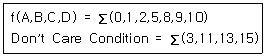
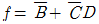
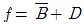
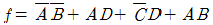
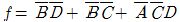
(정답률: 31%)
63. 10진수 59를 BCD코드로 변환한 결과로 옳은 것은?
- 0101 1001
- 0101 0111
- 0011 1011
- 1000 1100
(정답률: 42%)
64. 조합논리회로가 아닌 것은?
- DECODER
- ENCODER
- MUX
- RAM
(정답률: 46%)
65. BCD 가산기의 덧셈과정에 관한 설명으로 옳지 않은 것은?
- 2진수의 덧셈 규칙에 따라 두수를 더한다.
- 연산결과 4bit의 집합의 값이 9이거나 9보다 작으면 틀린 값이다.
- 연산결과 4bit의 집합의 값이 9보다 크거나 자리 올림수가 발생하면 틀린 값이다.
- 틀린 값에 6(0110)을 더한다.
(정답률: 32%)
66. 플립플롭의 동작 특성 중 클록펄스가 상승에지 변이 이후에도 입력값이 변해서는 안 되는 일정한 시간을 의미하는 것은?
- 전파지연시간 + 홀드시간 + 설정시간
- 전파지연시간
- 홀드시간
- 설정시간
(정답률: 43%)
67. 10진수 298의 9의 보수(9‘s complement)를 구한 것으로 옳은 것은?
- 701
- 801
- 901
- 902
(정답률: 32%)
68. 입력 트리거 신호가 가해질 때마다 일정한 폭을 갖는 구형파 펄스를 발생시키는 회로는?
- JK Flipflop
- Latch
- Monostable-Multivibrator
- T Flipflop
(정답률: 29%)
69. 기억 용량이 4KB(4096 word x 8 bit)인 SRAM에 필요한 최소 외부 핀 수는?(단, SRAM은 입ㆍ출력 공통형이다.)
- 12 pin
- 24 pin
- 32 pin
- 48 pin
(정답률: 19%)
70. 다음의 카운터 회로는 몇 진 카운터인가?
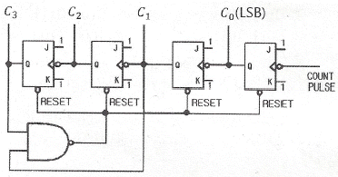
- 2
- 8
- 10
- 16
(정답률: 27%)
71. 다음 회로의 기능에 따른 명칭은?
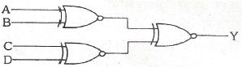
- 기수 패리티 발생 회로
- 다수결 회로
- 비교 회로
- 우수 패리티 발생 회로
(정답률: 35%)
72. 오류(Error) 검출 방식으로 거리가 먼 것은?
- Checksum
- Parity Code
- Hamming Code
- Excess-3 Code
(정답률: 36%)
73. 2진수 (11000110)을 Gray code 로 변환하면?
- 0 1 0 0 0 1 0 1
- 1 0 1 0 0 1 0 1
- 1 1 0 0 0 1 1 0
- 1 0 0 0 0 1 0 1
(정답률: 39%)
74. 2진수를 그레이 코드로 변환하는 회로에 들어가는 논리 게이트 명칭은?
- NOR 게이트
- OR 게이트
- NAND 게이트
- EX-OR 게이트
(정답률: 42%)
75. 순서논리회로의 동작 특성을 가장 올바르게 설명한 것은?
- 같은 입력이 주어지는 한 출력은 항상 일정하다.
- 연속적으로 동일한 입력 값이 주어질 때만 정상 동작을 한다.
- 입력 값에 관계없이 정해진 순서에 맞추어 출력이 생성된다.
- 동일한 입력이 주어져도 내부 상태에 따라 출력이 달라질 수 있다.
(정답률: 36%)
76. 다음 회로의 출력 Y가 수행하는 논리 동작은?(단, 정논리로 가정한다.)
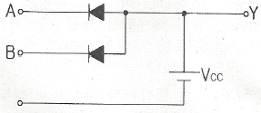
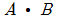
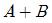
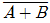
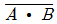
(정답률: 31%)
77. 가산과 감산의 기능을 갖는 연산회로를 설계하기 위해 꼭 필요한 게이트는?
- AND
- OR
- EX-NOR
- EX-OR
(정답률: 35%)
78. JK 플립플롭에서 Jn = Kn = 1 일 때 Qn-1의 출력상태는?
- 0
- 1
- 반전
- 부정
(정답률: 38%)
79. 다음 회로를 NAND 게이트만을 사용하여 구성하면?
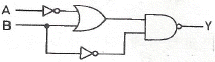
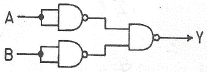
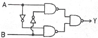
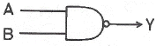
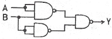
(정답률: 30%)
80. 다음 회로가 나타내는 것은?
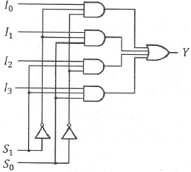
- 2 x 4 decoder
- 3 x 8 decoder
- 4 x 1 multiplexer
- 4 x 2 multiplexer
(정답률: 40%)
5과목: 데이터통신
81. IPv4에서 IPv6로의 천이 전략 중 캡슐화 및 역캡슐화를 사용하는 것은?
- Dual Stack
- Header translation
- Map Address
- Tunneling
(정답률: 30%)
82. HDLC의 프레임(Frame)의 구조가 순서대로 올바르게 나열된 것은?(단, A: Address, F: Flag, C: Control, D: Data, S: Frame Check Sequence)
- F-D-C-A-S-F
- F-C-D-S-A-F
- F-A-C-D-S-F
- F-A-D-C-S-F
(정답률: 40%)
83. 연속적인 신호파형에서 최고주파수가 W(Hz)일 때 나이키스트 표본화 주기(T)는?
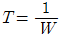
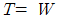
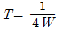
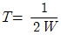
(정답률: 44%)
84. 전진에러수정(FEC) 코드에 대한 설명으로 틀린 것은?
- FEC 코드의 종류로 CRC 코드 등이 있다.
- 에러 정정기능을 포함한다.
- 연속적인 데이터 전송이 가능하다.
- 역채널을 사용한다.
(정답률: 29%)
85. 회선교환 방식에 대한 설명으로 틀린 것은?
- 고정된 대역폭으로 데이터 전송
- 회선이 설정되어 통신이 완료될 때까지 회선을 물리적으로 접속
- 수신노드에서 패킷을 재순서화하는 과정 필요
- 실시간 대화용에 적합
(정답률: 27%)
86. 호스트의 물리 주소를 통하여 논리 주소인 IP 주소를 얻어오기 위해 사용되는 프로토콜은?
- ICMP
- IGMP
- ARP
- RARP
(정답률: 36%)
87. 패킷 교환 방식에 대한 설명으로 틀린 것은?
- 데이터그램과 가상회선방식이 있다.
- 메시지를 1개 복사하여 여러 노드로 전송하는 방식이다.
- 가상회선방식은 연결 지향 서비스라고도 한다.
- 축적 교환이 가능하다.
(정답률: 36%)
88. X.25 프로토콜을 구성하는 계층에 해당하지 않는 것은?
- 물리계층
- 링크계층
- 논리계층
- 패킷계층
(정답률: 34%)
89. 인터넷 망(IP Network)과 유선 전화망(PSTN)간을 상호 연동시키는데 사용되는 시그널링 프로토콜은?
- ISDN
- R2 CAS
- H.323
- SIGTRAN
(정답률: 22%)
90. 프로토콜의 기본적인 요소로 볼 수 없는 것은?
- 구문(Syntax)
- 타이밍(Timing)
- 처리(Processing)
- 의미(Semantics)
(정답률: 43%)
91. 다중접속방식 중 CDMA 방식에 대한 특징으로 틀린 것은?
- 시스템의 포화 상태로 인한 통화 단절 및 혼선이 적다.
- 실내 또는 실외에서 넓은 서비스 권역을 제공한다.
- 배경 잡음을 방지하고 감쇄시킴으로써 우수한 통화 품질을 제공한다.
- 산악 지형 또는 혼잡한 도심 지역에서는 품질이 떨어진다.
(정답률: 44%)
92. 패킷화 기능이 없는 일반형 터미널에 접속하여 패킷의 조립과 분해 기능을 대신해 주는 장치는?
- DTE
- PS
- PAD
- PMAX
(정답률: 39%)
93. 8진 PSK 변조방식에서 변조속도가 2400(baud)일 때 정보 신호의 속도는 몇 (bits/s)인가?
- 7200
- 4800
- 2400
- 800
(정답률: 41%)
94. Hamming코드에서 총 전송비트수가 17비트 일 때, 해밍 비트수와 순수한 정보 비트수는?
- 해밍 비트수 : 4, 정보 비트수 : 13
- 해밍 비트수 : 5, 정보 비트수 : 12
- 해밍 비트수 : 6, 정보 비트수 : 11
- 해밍 비트수 : 7, 정보 비트수 : 10
(정답률: 38%)
95. QPSK 변조방식의 대역폭 효율은 몇 [bps/Hz]인가?
- 1
- 2
- 4
- 8
(정답률: 26%)
96. IP계층의 프로토콜에 해당되지 않는 것은?
- PMA
- ICMP
- ARP
- IP
(정답률: 34%)
97. OSI 7계층에서 단말기 사이에 오류 수정과 흐름제어를 수행하여 신뢰성 있고 명확한 데이터를 전달하는 계층은?
- 전송 계층
- 응용 계층
- 세션 계층
- 표현 계층
(정답률: 31%)
98. 192.168.1.0/24 네트워크를 FLSM 방식을 이용하여 6개의 subnet으로 나누고 ip subnet-zero를 적용했다. 이 때 subnetting된 네트워크 중 5번째 네트워크의 2번째 사용 가능한 IP주소는?
- 192.168.1.255
- 192.168.0.129
- 192.168.1.130
- 192.168.1.64
(정답률: 39%)
99. 아날로그 데이터를 아날로그 신호로 변환하는 변조방식이 아닌 것은?
- AM
- TM
- FM
- PM
(정답률: 39%)
100. 광대역통합네트워크에서 VoIP 서비스를 제공하기 위한 프로토콜이 아닌 것은?
- SIP
- R2 CAS
- H.323
- Megaco
(정답률: 28%)